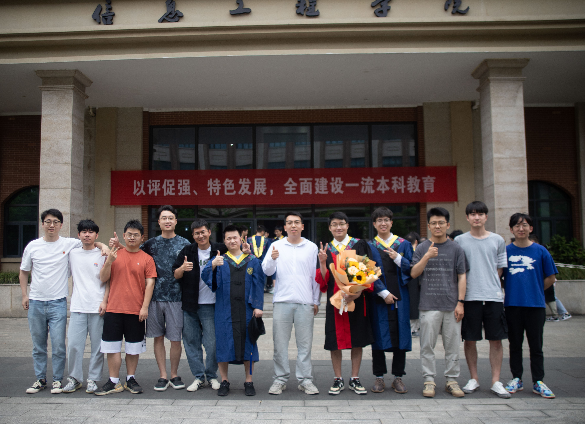

Intelligent perception, control, and analysis lab (Ipca-lab)
Intelligent perception, control, and analysis lab is directed by Prof. Wen-An Zhang and Prof. Xiang Qiu at the Department of Control science and Engineering, College of Information Engineering, Zhejiang University of Technology. We focus on intelligent sensing, control and learning for networked control systems. Current research interests contain networked motion control, active disturbance rejection control, fault-tolerant control, prognostics and health managementinformation.
 |
 |
|  |
News
[2023.11]Our paper “Privacy-preserving federated learning for power transformer fault diagnosis with unbalanced data” was accepted by IEEE Transactions on Industrial Informatics!
[2023.08]Doctor Wu was awarded the Chinese Goverment Scholarship to pursue study in Japan as a visiting scholar.
[2023.07]Our paper “Bearing fault diagnosis with incomplete training data: Fault data with partial diameters” was accepted by IEEE Transactions on Automation Science and Engineering!
[2023.01]Our paper “Wavelet packet decomposition-based multiscale CNN for fault diagnosis of wind turbine gearbox” was published in IEEE Transactions on Cybernetics!
[2022.09]Doctor Wu won youth science fund project of NSFC in 2022.
[2022.01]Our paper “Online modeling of the CNC engraving system with dead-zone input nonlinearity” was published in IEEE Transactions on Industrial Electronics!
[2021.01]Our paper “False data injection attack detection for industrial control systems based on both time- and frequency-domain analysis of sensor data” was published in IEEE Internet of Things Journal!
Contact
Address: Room C314, Information Engineering Building, Zhejiang University of Technology, 288 Liuhe Rd, Xihu District, Hangzhou, China.
E-mail: wazhang@zjut.edu.cn, qiuxiang@zjut.edu.cn, qwu@zjut.edu.cn